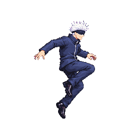
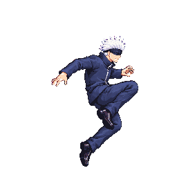
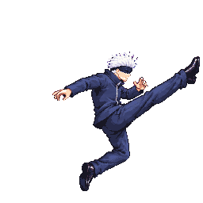
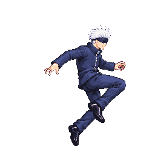
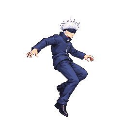
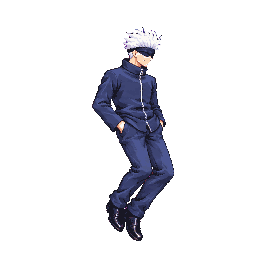
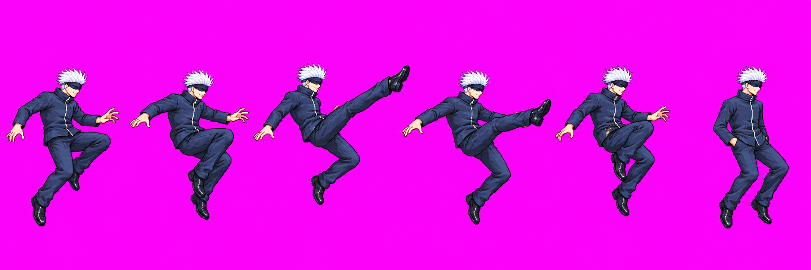
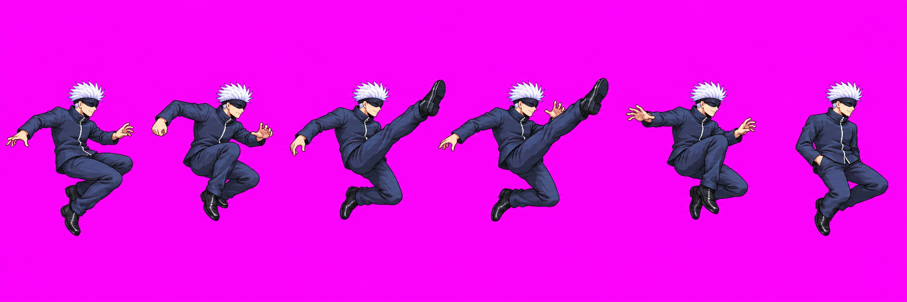

Gojo uair v01 — ENG-112
Candidate prepared for user review; no image approval recorded. Selected relay #34 call 3: an up-and-forward aerial kick. The fresh round used all three calls. The first two remain preserved as holds.
Packed candidate
48-color whole-character pack: 54 animations / 251 frames. This candidate occupies atlas cells 245–250 (frames 0–5), phases 2/2/2. Packer scale gate: head median 1.000, feet proxy 1.057; all six head readings .971–1.029. Auto-head fit ×0.9434; packed frame 2 has measured offset [-11,0] to retain a 4px right margin. The packer reports no clipped uair frames.
 Approved idle f0
Approved idle f0
Packed loop
f1 · chamber
f2 · up-forward kick
f3 · retraction
f4 · retract
f5 · hands pocketedThe source selected is an unchanged copy of call 3; fit and placement are import settings, not pixel edits. View selected source · Call prompts, source paths, findings and hashes.

Other calls in this round
Call 1 was held because the raw figures exceeded the square-cell height. Call 2 was held because figures touched cell edges. Their preserved images remain available below; neither was imported as a candidate.

call 1 — held
call 2 — heldTechnical review
Astra verdict: HOLD. f3 retracts the leg during the second active frame instead of sustaining the strike; the jacket also reads compressed relative to the references. Head/body measurements and uncertainty are in the full Astra audit. Claude still owns runtime contact verification. User approval applies to the drawing only and does not clear technical holds.